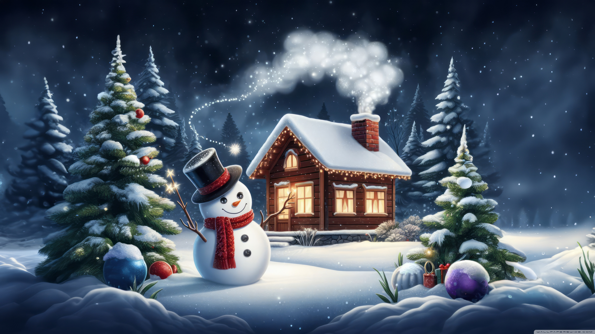

Wielkanoc i Boże Narodzenie w Polsce – Tradycje i Magia Świąt
Polska to kraj bogaty w tradycje, które szczególnie mocno objawiają się podczas dwóch najważniejszych świąt w roku: Wielkanocy i Bożego Narodzenia. Oba te święta łączą rodzinne spotkania, piękne obrzędy i wyjątkową atmosferę.Wielkanoc – Święto Zmartwychwstania
Wielkanoc to najważniejsze święto w chrześcijańskim kalendarzu, upamiętniające Zmartwychwstanie Chrystusa. W Polsce przygotowania rozpoczynają się już od Wielkiego Postu, a kulminacją jest Wielka Sobota i święcenie pokarmów. Koszyczek wielkanocny pełen jajek, chleba, soli i innych smakołyków to symbol odrodzenia i życia. W Niedzielę Wielkanocną rodziny zasiadają do uroczystego śniadania, dzieląc się jajkiem i radością. Poniedziałek wielkanocny, znany jako Lany Poniedziałek, pełen jest radosnej zabawy i tradycyjnego polewania wodą.
Boże Narodzenie – Czas Miłości i Bliskości
Boże Narodzenie to magiczny czas, który zaczyna się od Wigilii – wieczoru pełnego wzruszeń. W polskich domach króluje zwyczaj dzielenia się opłatkiem i składania życzeń. Wigilijna kolacja składa się z 12 tradycyjnych potraw, a po niej śpiewa się kolędy i czeka na prezenty pod choinką. Święta Bożego Narodzenia to również czas odwiedzania bliskich, pasterki i refleksji nad istotą miłości oraz pokoju.